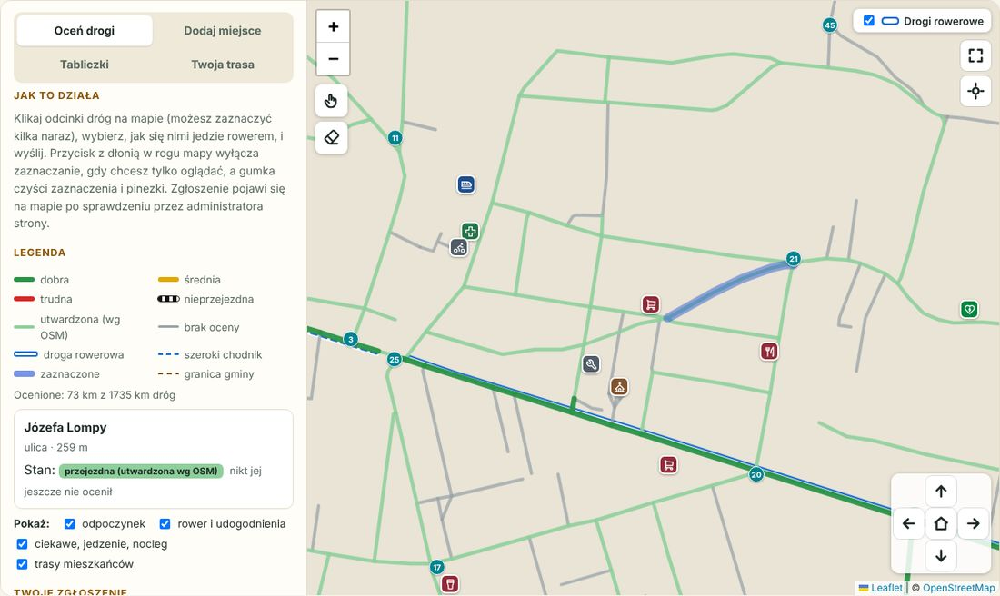
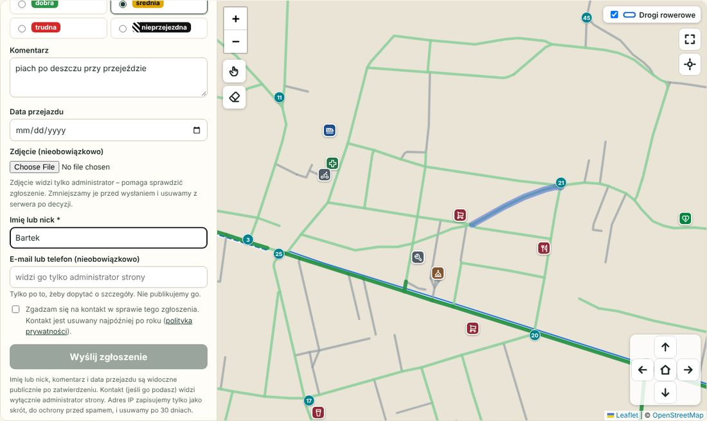
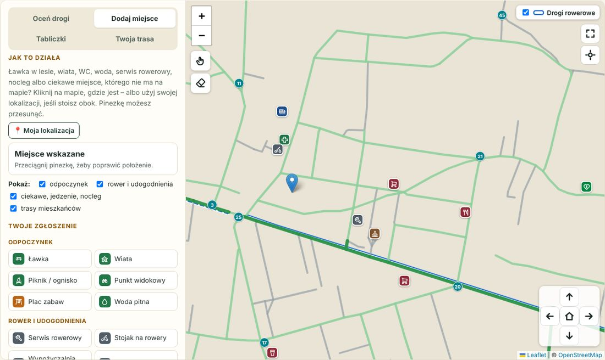
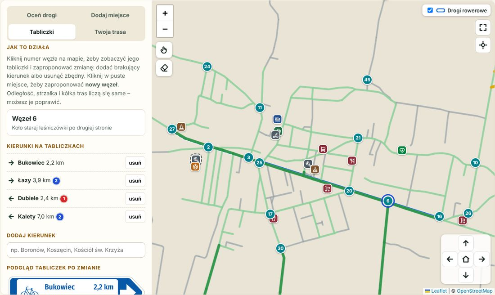
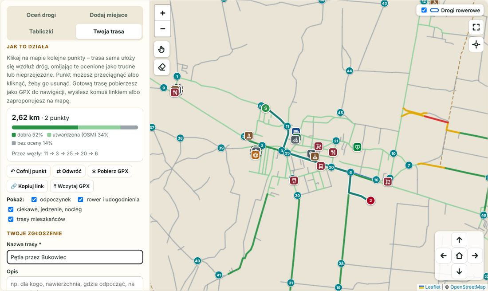

Spis
1Zanim zaczniesz
- Mapa wspólna jest na stronie projektu w sekcji „Mapa wspólna”. Na górze panelu wybierasz, co chcesz zrobić: Oceń drogi, Dodaj miejsce, Tabliczki albo Twoja trasa.
- Do każdego zgłoszenia potrzebny jest tylko nick (widoczny przy zgłoszeniu). E-mail lub telefon są nieobowiązkowe – zostaw je, jeśli możemy dopytać; widzi je tylko administrator.
- Możesz dodać zdjęcie – widzi je tylko administrator, a po decyzji jest usuwane.
- Przycisk z dłonią w rogu mapy wyłącza zaznaczanie, gdy chcesz tylko oglądać. Gumka czyści zaznaczenia i pinezki.
2Oceń drogi
- Wybierz Oceń drogi i przybliż mapę w miejsce, którym jechałeś.
- Kliknij odcinek drogi – podświetli się, a w panelu zobaczysz jego nazwę, długość i dotychczasowe oceny. Możesz zaznaczyć kilka odcinków naraz; ponowne kliknięcie odznacza.
- Wybierz, jak się jedzie: dobra średnia trudna nieprzejezdna
- Dopisz komentarz (np. „piach po deszczu przy przejeździe”) i datę przejazdu – nieobowiązkowo, ale bardzo pomaga.
- Wpisz nick i kliknij Wyślij zgłoszenie.
Jak oceniać: dobra – jedzie się bez kłopotu każdym rowerem; średnia – da się, ale wolniej (dziury, luźny żwir, korzenie); trudna – miejscami trzeba mocno zwolnić albo prowadzić rower (piach, błoto); nieprzejezdna – nie da się przejechać (zarośnięta, zalana, zamknięta). Oceniaj to, co widziałeś sam – najlepiej świeżo po przejeździe.


Ocenione drogi przydają się wszystkim: nawigacja „Jedź” i planer tras omijają te trudne i nieprzejezdne, a lista złych odcinków trafia do gminy jako wykaz dróg do naprawy.
3Dodaj miejsce
- Wybierz Dodaj miejsce.
- Kliknij na mapie, gdzie jest to miejsce – pojawi się pinezka, którą możesz przeciągnąć. Stoisz obok? Kliknij Moja lokalizacja.
- Wybierz rodzaj: ławka, wiata, WC, woda pitna, serwis rowerowy, stojak, nocleg, jedzenie, ciekawe miejsce…
- Dodaj nazwę i krótki opis (np. „dwie ławki i stół, zadaszenie”), nick – i wyślij.

4Zaproponuj zmianę tabliczki
- Wybierz Tabliczki i kliknij numer węzła (turkusowe kółko z numerem) – zobaczysz wszystkie kierunki, które mają być na jego tabliczkach.
- Zbędny kierunek – kliknij usuń. Brakuje kierunku – wpisz cel w polu Dodaj kierunek. Odległość i strzałka liczą się same, a pod spodem widać podgląd tabliczek po zmianie.
- Kliknij w puste miejsce mapy, żeby zaproponować nowy węzeł – i zaznacz, czy jest tam już słupek (np. z nazwą ulicy).
- W polu Uwagi możesz dopisać np. „tabliczka zasłonięta przez drzewo”. Nick – i wyślij.

5Twoja trasa
- Wybierz Twoja trasa i klikaj na mapie kolejne punkty – trasa sama ułoży się wzdłuż dróg, omijając te ocenione jako trudne lub nieprzejezdne.
- Punkt możesz przeciągnąć albo kliknąć, żeby go usunąć. Pod spodem widać długość i to, jaka część trasy jest dobra, utwardzona albo jeszcze bez oceny.
- ⤓ Pobierz GPX – plik do nawigacji lub zegarka. 🔗 Kopiuj link – wyślij komuś trasę. ⤒ Wczytaj GPX – trasa od znajomego ułoży się na naszych drogach.
- Chcesz, żeby inni też ją zobaczyli? Wpisz nazwę trasy i opis (dla kogo, gdzie odpocząć, na co uważać) i wyślij jako propozycję.

6Co się dzieje po wysłaniu
- Zgłoszenie od razu widzisz na mapie jako „Twoja propozycja” (tylko w swojej przeglądarce).
- Administrator je sprawdza – po zatwierdzeniu trafia na mapę dla wszystkich, z Twoim nickiem.
- Coś się pomyliło? Wyślij ocenę tego samego odcinka jeszcze raz – w ciągu kilku godzin poprawi poprzednią, jeśli nie była jeszcze sprawdzona.
Jeździsz z telefonem? Drogi możesz oceniać też w trakcie jazdy, w nawigacji – zob. instrukcję „Jedź”. · Polityka prywatności